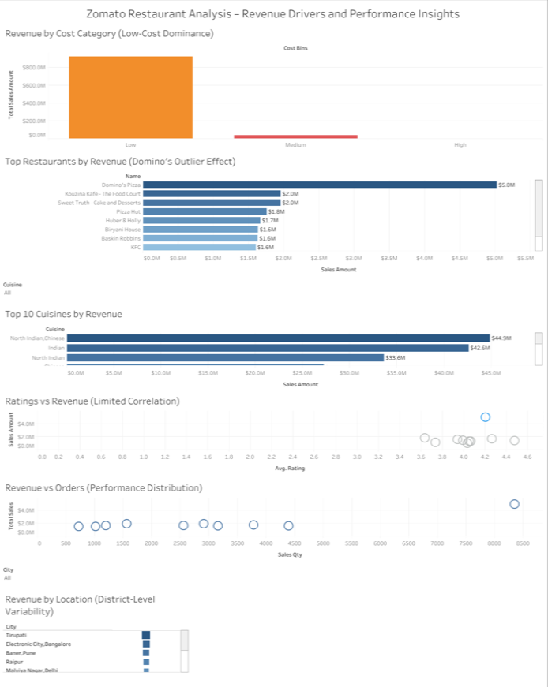

Zomato Restaurant Performance Analysis
When the data disagrees with your expectations
I chose restaurant performance because it gave me a more complex problem than simply analyzing sales or customers. I wanted to examine performance from multiple angles, see whether high-performing restaurants shared identifiable characteristics, and determine whether those patterns could potentially inform lower-performing restaurants.
It also gave me an opportunity to work outside a market I already understood. The dataset was centered on India, so I had to adapt my business instincts to an unfamiliar context rather than rely on assumptions about the market.
“What differentiates high-performing restaurants from low-performing restaurants, and what aspects of their success could potentially be used to improve the low-performers?”
I expected the analysis to reveal some common characteristics among the strongest performers.
It didn't.
And that turned out to be the most valuable part of the project.
The investigation
The project requirements provided the initial framework, but I treated each visualization as another question rather than a box to check.
I started by looking at revenue by cuisine, then moved through restaurant-level performance, ratings, cost categories, location, and the relationship between revenue and order volume.
At each stage, I asked:
“What does this contribute to the whole picture?”
That kept the analysis moving without allowing curiosity to turn into an endless collection of charts.
I was looking for a pattern I could use to explain why some restaurants were outperforming others.
Instead, the data kept complicating that idea.
Then one visualization changed the direction of the analysis.
From analysis to the dashboard
The dashboard brought the investigation together across cost, restaurant performance, cuisine, ratings, orders, and location.

Tableau dashboard: Zomato Restaurant Analysis – Revenue Drivers and Performance Insights.
The finding that changed the analysis
₹923.6M in revenue came from the low-cost category
Within this dataset, revenue was overwhelmingly concentrated in the low-cost category.
I expected the mid-cost category to contribute substantially more revenue and order volume than the low-cost category.
The data showed the opposite.
Low-cost restaurants generated ₹923.6 million, 95.8% of the total revenue represented in the dataset.
The visualization made the difference difficult to miss: the low-cost category appeared as an enormous pillar while the other categories were comparatively tiny.
That was not what I expected to find.
More importantly, it was too large a pattern to simply dismiss.
The appropriate conclusion was not that low-cost restaurants cause higher revenue, nor that this represents the entire Indian restaurant market. The dataset cannot support either claim.
What it does support is much more precise:
“Within this dataset, revenue was overwhelmingly concentrated in the low-cost category.”
That changed the analytical emphasis of the project.
Rather than forcing the data to answer the original question in the way I expected, I allowed the strongest evidence to determine what deserved attention.
What else the data revealed
Domino's as an outlier
The restaurant-level analysis produced another striking result: Domino's Pizza was an extreme revenue outlier, generating roughly $5.0 million in the dashboard.
The gap between Domino's and the other leading restaurants was substantial enough to warrant attention, but an outlier is not automatically an explanation.
Its presence tells us that something about that restaurant's performance is unusual within the dataset.
It does not tell us why.
Ratings did not provide a simple explanation
Ratings were another tempting explanation.
A reasonable assumption might be that restaurants with stronger ratings would consistently generate more revenue.
The data did not show a strong, simple relationship.
That doesn't make ratings irrelevant. It means that rating alone did not explain the performance differences visible in this dataset.
This was another example of the analysis becoming more useful by ruling out overly simple explanations.
The dashboard as communication
The dashboard brought the investigation together:
Revenue by Cost Category: Strongest finding, with overwhelming concentration in the low-cost category.
Top Restaurants by Revenue: Domino's outlier demonstrated how dramatically individual restaurant performance could differ.
Top 10 Cuisines by Revenue: Cuisine revealed areas of revenue concentration without establishing causation.
Ratings vs. Revenue: The relationship was limited rather than strongly predictive.
Revenue vs. Orders: Performance could not be reduced to order volume alone.
Revenue by Location: Geographic variation was visible, while data-quality issues required caution in interpretation.
The dashboard therefore became more than a collection of required visualizations.
It became the communication layer between the analysis and the decision-maker: a way to move from what happened to what deserves further investigation.
What I would and wouldn't conclude
The strongest result in this project is also the one that requires the most restraint.
The dataset shows an extraordinary concentration of revenue in the low-cost category. That is a meaningful signal.
But the dataset does not contain enough information to explain the entire reason behind that concentration.
Important variables such as promotions, seasonality, competition, logistics, campaigns, expenses, and broader financial performance were either unavailable or outside the scope of the analysis.
That means the analysis can identify patterns worth investigating, but it cannot establish the underlying causes of those patterns.
For me, that distinction is part of the result.
A useful analysis is not one that explains everything. It is one that clearly separates what the evidence demonstrates from what still needs to be investigated.
What I took from the project
This project started with an expectation that high-performing restaurants would reveal a recognizable formula.
Instead, the data challenged that assumption.
That was a better outcome.
It reinforced something I want to carry into every analysis:
“Assumptions and hypotheses are useful starting points. Evidence should determine where the analysis ends.”
The project also tested something beyond my technical ability.
I deliberately chose a more complex analytical framing because I wanted to see whether I could investigate several dimensions without letting curiosity take over the project. Once the strongest finding emerged, I had to recognize that it was strong enough to shape the story without endlessly adding more analysis in search of a cleaner answer.
That balance is the part of this project I value most: curiosity without losing scope, business judgment without forcing a conclusion, and analysis without overstating what the data can prove.
The analytical arc
The data didn't give me the answer I expected.
It gave me a better question.